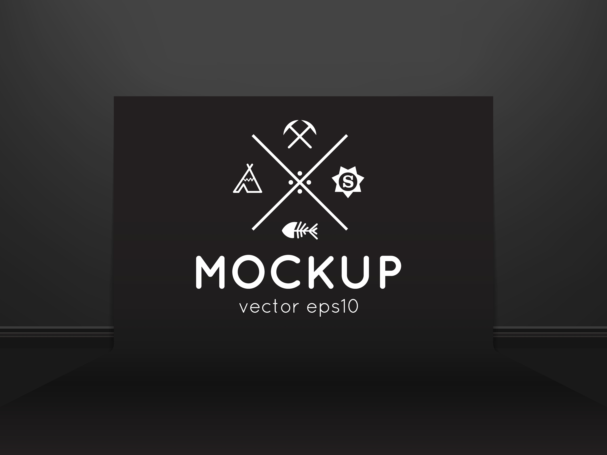
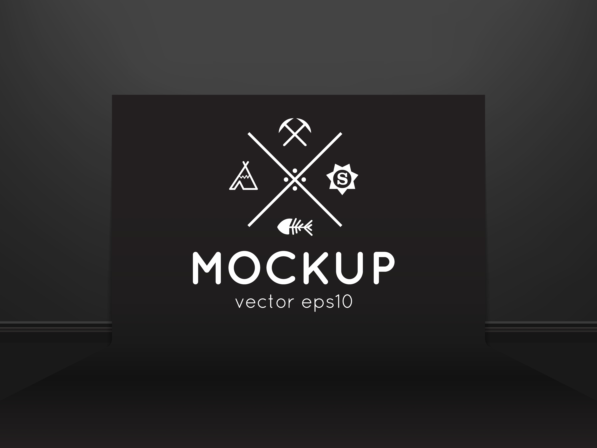

SOBRE
Os melhores profissionais
Na Velora Strategies, acreditamos que o sucesso de um negócio começa com uma estratégia
bem definida.
Somos uma consultoria especializada em transformar desafios em oportunidades, oferecendo soluções
personalizadas e inovadoras para empresas que buscam crescimento e excelência.
Com uma equipe de especialistas apaixonados por estratégia, finanças e gestão, ajudamos nossos
clientes a navegar pelos cenários mais complexos do mercado. Nossa abordagem combina análise
profunda, tecnologia de ponta e insights estratégicos para entregar resultados que fazem a
diferença.
Seja para otimizar operações, planejar o futuro ou impulsionar a rentabilidade, na Velora Strategies,
sua visão se torna nossa missão. Juntos, construímos caminhos para um futuro mais próspero e
sustentável.
 
